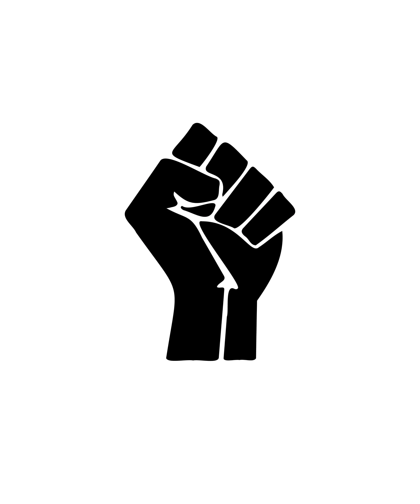
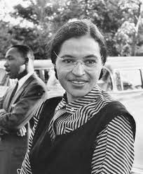
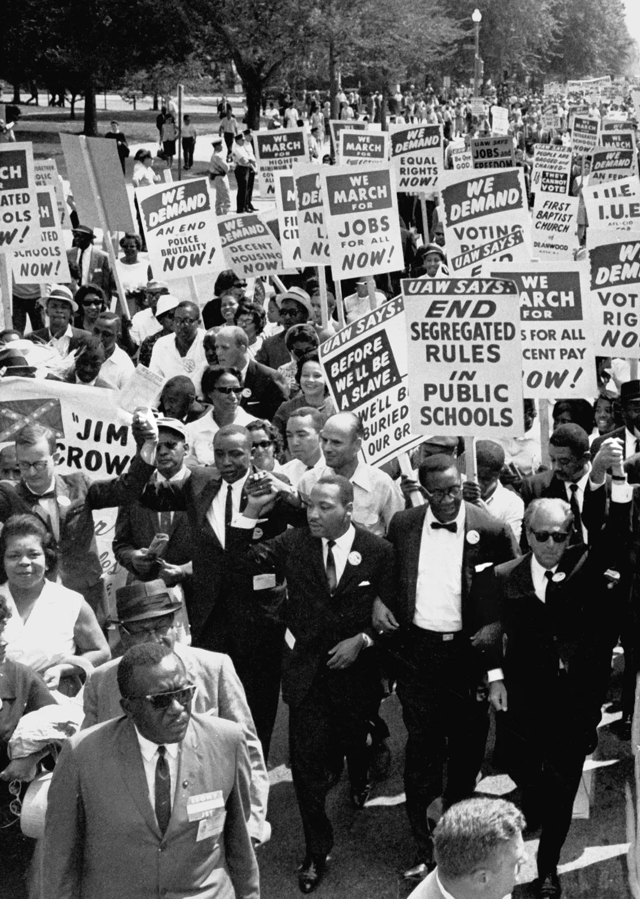

Le mouvement des droits civiques
1954 - 1968

Le mouvement moderne des droits civiques remonte à l’arrivée des Noirs
en Amérique en tant qu’esclaves en 1619, à travers les questions de
l’esclavage réfléchies (et finalement évitées) par les Pères
fondateurs, à la rancœur croissante du 19ème siècle et aux mouvements
abolitionnistes et à la montée en puissance de sommités noires telles
que Frederick Douglass. La question des droits civiques était
évidemment un aspect profond de la guerre civile et un aspect animé de
la reconstruction. Au début du XXe siècle, la bataille a été menée par
des hommes comme Booker T. Washington et W.E.B. DuBois, bien que les
deux différaient puissamment et avec colère dans leurs idées.
Le premier événement majeur du mouvement moderne des droits civiques a
été la décision de la Cour suprême de 1954 Brown vs. Board of
Education, qui a annulé la ségrégation dans les écoles à travers le
pays. Les écoles, en particulier dans le Sud, ont été lentes à s’y
conformer et les tentatives d’enregistrement des élèves noirs ont
souvent dégénéré en violence. Pendant ce temps, en 1955 à Montgomery,
en Alabama, une couturière nommée Rosa Parks a refusé de donner son
siège de bus à un homme blanc en décembre 1955 et a déclenché le
boycott des bus de Montgomery, une manifestation réussie qui a duré
plus d’un an et s’est terminée par la déségrégation ordonnée par la
Cour suprême des bus de Montgomery. Le boycott a également rendu
célèbre un jeune pasteur nommé Martin Luther King, Jr., qui a dirigé
la manifestation.

Les tentatives de déségrégation scolaire et le
boycott des bus ont déclenché un flot de manifestations de
protestation qui ont englouti le pays. En 1960, les étudiants ont été
les pionniers du sit-in comme une forme de protestation, et bientôt
des sit-in ont éclaté dans tout le pays. Des groupes comme SNCC, CORE
et SCLC ont organisé des rassemblements, des manifestations et des
campagnes massives dans des villes célèbres pour leur discrimination.

Le mouvement a bénéficié d’une attention médiatique massive, qui a
suscité la sympathie internationale à travers ses photos et vidéos de
manifestants manifestant pacifiquement pour leurs droits, mais ont été
brutalement attaqués par des ségrégationnistes blancs. Lentement, le
mouvement des droits civiques a atteint des objectifs importants tels
que le Civil Rights Act de 1964 et le Voting Rights Act de 1965.
Pendant ce temps, les Noirs se sont mis de plus en plus en colère
contre la lenteur de la déségrégation et l’échec de nombreux Blancs à
abandonner le racisme. Ces Noirs sont passés de la politique
non-violente de Martin Luther King Jr. au Black Power Movement plus
militant à la fin des années 1960.
Avec ce militantisme amplifié, le
mouvement des droits civiques a perdu une grande partie de son soutien
national, et le sentiment de fraternité et d’indignation qui avait
alimenté le mouvement s’est estompé. Couplé à l’assassinat de ses plus
grands dirigeants, de JFK en 1963 à Malcolm X en 1965 en passant par
Martin Luther King, Jr. et Robert Kennedy en 1968, le mouvement a
obtenu peu d’autres triomphes juridiques. L’assassinat de Martin
Luther King, Jr. en particulier a conduit à la dissolution d’un
mouvement unifié des droits civiques, mais pas aux problèmes des Noirs
en Amérique. Beaucoup d’entre eux se sont tournés vers des
organisations militantes encore plus puissantes comme le Black Panther
Party pour continuer la lutte, mais même ce mouvement marginalisé
avait pour la plupart disparu au milieu des années 1970. L’histoire
des États-Unis a toujours été profondément mêlée à leur traitement (et
à leur mauvais traitement) des Noirs américains. La lutte pour
naviguer et surmonter ces problèmes continue de frustrer et de définir
le pays aujourd’hui.
Bien que la pleine égalité n’ait pas encore été
atteinte, le mouvement des droits civiques a mis en place des réformes
fondamentales. La ségrégation légale en tant que système de contrôle
racial a été démantelée et les Noirs n’ont plus été soumis à
l’humiliation des lois Jim Crow. Les institutions publiques ont été
ouvertes à tous. Les Noirs ont obtenu le droit de vote et l’influence
qui l’accompagnait dans une démocratie. Il s’agissait en effet de
longs pas vers l’égalité raciale.
Ce site raconte l'histoire de 3 événements marquant du mouvement des droits civiques
pour les noirs :